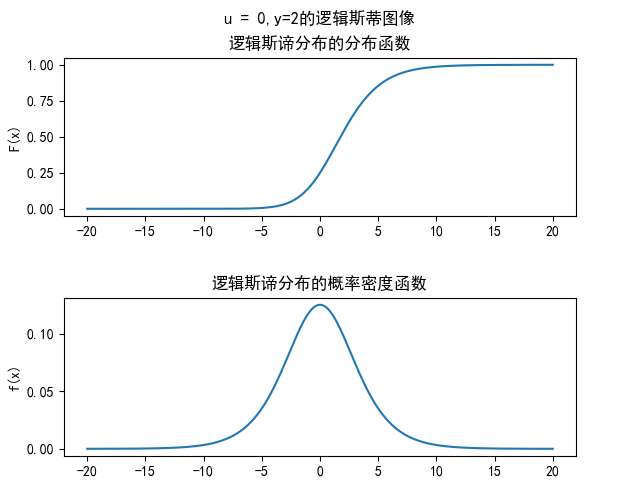

Logistic回归
虽然这个名字叫做logistic回归,但我感觉更像一种分布算法?(这是否也算一种ntr),其分布函数的基本结构是sigmoid函数.
$$f(x) = \frac{1}{1+e^x}$$
logistic分布
分布函数:
$$F(x) = P(X \leq x) = \frac{1}{1+e^{\frac{-(x-\mu)}{\gamma}}} $$
概率密度函数:
$$f(x) = F^{\prime}(x) = \frac{e^{\frac{-(x-\mu)}{\gamma}}}{\gamma(1+e^{\frac{-(x-\mu)}{\gamma}})^2} $$
其中$\mu$与$\gamma$分别为位置参数(理解成F(x)的中心对称点),形状参数(在中心对称点的变化速度描述).

二项logistic回归模型
虽然名字是回归模型,但其实本质是分类模型,由条件概率分布P(Y|X)表示.Y取值1或0.
$$
\begin{aligned}
P(Y=1|x) = \frac{exp({\omega}x+b)}{1+exp({\omega}x+b)}\\
P(Y=0|x) = \frac{1}{1+exp({\omega}x+b)}
\end{aligned}
$$
令$\omega = (\omega^{(1)},…,\omega^{(n)},b)^T$,$x=(x^{(1)},..,x^{(n)},1)$,则上式变为
$$
\begin{aligned}
P(Y=1|x) = \frac{exp({\omega}x)}{1+exp({\omega}x)}\\
P(Y=0|x) = \frac{1}{1+exp({\omega}x)}
\end{aligned}
$$
所以
$$ln(\frac{P(Y=1|x)}{P(Y=0|x)}) = {\omega}x$$
也就是说,在二项logistic回归模型下,输出Y=1的几率(事件发生的概率比上事件不发生的概率)是输入x的线性函数
模型的参数估计
使用极大似然估计法进行模型估计.
设:
$$P(Y=1|x) = \pi(x),P(Y=0|x) = 1-\pi(x)$$
似然函数是
$$\Pi(\pi(x))^{y_i}(1-\pi(x))^{1-y_i}$$
(我觉得上式很巧妙,因为不知道y_i的值,我们就不知道使用那个概率,但是通过幂的控制实现了选择)
对数似然函数是:
$$L(\omega)=\Sigma[y_i(\omega*x_i)-log(1+exp({\omega}*x)i))]$$
多项logistic回归
二项logistic回归告诉了我们Y=1的概率是Y=0的概率的${\omega}x$倍,如果是多项的话,每一个都是另一个的$P(Y=k|x) = \omega_i倍$,$Y \in {1,…,K}$那么,其分布函数为:
$$\begin{aligned}
P(Y=k|x) = \frac{exp(\omega_kx)}{1+\displaystyle \sum_{k=1}^{K-1}exp(\omega_kx)}\qquad k=1,…,K-1\\
P(Y=K|x) = \frac{1}{1+\displaystyle \sum_{k=1}^{K-1}exp(\omega_kx)}
\end{aligned}$$
最大熵模型
最大熵模型感觉是一个从信息学推出的原理,但它本质和最大似然估计法很像,都是求最大可能.
最大熵原理
假设离散随机变量X的概率分布是P(X),则其熵是:
$$H(P) = -{\Sigma}P(X)logP(X)$$
直观来说,最大熵原理就是在满足已有限制条件之下,未知的部分都是等可能的.
最大熵模型的定义
假设分类模型是一个条件概率分布P(Y|X),给定训练集$T={(x_1,y_1),…,(x_N,y_N)}$.
对于P(X,Y)的经验分布和其边缘分布的经验分布,使用 $\hat{P}(X,Y),\hat{P}(X)$表示
$$\begin{aligned}
\hat{P}(X=x_i,Y=y_i) &= \frac{v(X=x_i,Y=y_i)}{N}\\
\hat{P}(X=x_i) &= \frac{v(X=x_i)}{N}
\end{aligned}$$
v表示频数,N是总的训练样本容量
使用特征函数f(x,y)描述输入x和输出y的关系,
$$f(x,y) = \begin{cases}
1,x和y满足某一个事实\
0,x和y不满足某一个事实
\end{cases}$$
那么,关于经验分布的期望值$E_{\hat{P}}(f) = \Sigma{\hat P(x,y)f(x,y)}$
对于模型$P(X|Y)$与经验分布$\hat P(X)$的期望值$E_P(f) = \Sigma{\hat P(x)P(y|x)f(x,y)}$
$E_P(f) = E_{\hat{P}}(f)$
那么最大熵模型的定义为:
假设满足所有约束条件的模型集合为:
$$C = {P \in \mathcal P|E_p(f_i) = E_{\hat P}(f_i),i=1,…,n}$$
定义在条件概率分布$P(Y|X)$上的条件熵为:
$$H(P) = -\Sigma \hat P(x)P(y|x)lnP(y|x)$$
则模型集合C中条件熵最大的模型称为最大熵模型
最大熵模型的学习
最大熵模型的学习可以形式化为约束最优化问题
约束条件:
$$\begin{aligned}
E_p(f_i) &= E_{\hat P}(f_i),i=1,…,n\\
\Sigma P(y|x) &= 1
\end{aligned}$$
函数:
$$\underset{P\in C}{min}\quad-H(P) = \Sigma \hat P(x)P(y|x)lnP(y|x)$$
引入拉格朗日乘子$\omega = {\omega_0,…,\omega_n}$,定义拉格朗日函数$L(P,\omega)$
$$\begin{aligned}
L(P,\omega) &= -H(P) + \omega_0(1-\Sigma P(y|x))+\displaystyle \sum_{i=1}^n{\omega_i(E_p(f_i) - E_{\hat P}(f_i))}
\end{aligned}$$
解得:
$$\begin{aligned}
P_\omega(y|x) = \frac{exp(\displaystyle \sum_{i=1}^n\omega_if_i(x,y))}{Z_\omega(x)}\\
Z_\omega(x) = \displaystyle \sum_{y}exp(\displaystyle \sum_{i=1}^n\omega_if_i(x,y))
\end{aligned}
$$
求得$P_\omega(y|x)$之后,反带入L(P,\omega),求得关于$\omega$的极大化问题(求偏导).
模型学习的最优化算法
迭代尺度法
类似于梯度下降法,我们想从一个$\omega$出发,找到最优的$\omega$,我们每一次寻找的步长为$\delta$,直到步长都为0,说明我们找到了最优的$\omega$.
那么,步长怎么找?我们需要找到每一个$\omega$增加一个步长的时候,改变值的下界,这个下界是$\delta$的函数,下界的极值点就是我们需要求的$\delta$.
在我的理解,寻找下界是为了一步尽量走得更远(下界越大,这一步迈的更远),减少迭代次数.
算法:
- 对所有$i \in {1,…,n},取初值\omega_i = 0$
- 对每一个$i \in {1,…,n}$
- 令$\delta_i$是方程
$$ \displaystyle \sum_{(x,y)}\hat P(x)P(y|x)f_i(x,y)exp(\delta_if^{*}(x,y)) = E_{\hat P}(f_i) $$
的解,$f^{*}(x,y) = \displaystyle \sum _{i=1}^nf_i(x,y)$
- 更新$\omega_i = \omega_i + \delta_i$
- 如果不是所有的$\delta_i = 0$,则重复第二步
拟牛顿法
对于最大熵模型而言:
$$\begin{aligned}
P_\omega(y|x) = \frac{exp(\displaystyle \sum_{i=1}^n\omega_if_i(x,y))}{Z_\omega(x)}\\
Z_\omega(x) = \displaystyle \sum_{y}exp(\displaystyle \sum_{i=1}^n\omega_if_i(x,y))
\end{aligned}$$
目标函数:
$$f(\omega) = \displaystyle \sum_{x}\hat P(x)ln\displaystyle \sum_yexp(\displaystyle \sum_{i=1}^n\omega_if_i(x,y))-\displaystyle \sum_{x,y}\hat P(x,y)\displaystyle \sum_{i=1}^n\omega_if_i(x,y)$$
梯度:
$$g(\omega) = (\frac{\partial{f(\omega)}}{\partial\omega_1},…,\frac{\partial{f(\omega)}}{\partial\omega_n})^T$$
其中:
$$\frac{\partial{f(\omega)}}{\partial\omega_i} = \displaystyle \sum_{x,y}\hat P(x)P_\omega(y|x)f_i(x|y)-E_{\hat P}(f_i)$$
算法: - 选定初始的$\omega^{(0)}$,取$B_0$为正定对称矩阵,直接为单位阵即可,置$k=0$
- 计算$g_k = g(\omega^{k})$,若$||g_k|| \lt \epsilon(精度要求),则停止计算,否则进入下一步$
- 由$B_kp_k = -g_k 求出p_k$
- 求$\lambda_k使得$ $f(\omega^{(k)}+\lambda_kp_k)最小(求导即可)$
- 令$\omega^{(k+1)}= \omega^{(k)}+\lambda_kp_k$
- 计算$g_{k+1} = g(\omega^{k+1})$,若$||g_{k+1}|| \lt \epsilon(精度要求),则停止计算,否则进入下一步$
- 计算 $B_{k+1} = B_{k} + \frac{y_ky_k^T}{y_k^T\delta_k}-\frac{B_k\delta_k\delta_k^TB_k}{\delta_k^TB_k\delta_k}$
其中,$y_k = g_{k+1}-g_{k},\delta_k = \omega^{k+1}-\omega^{k}$ - 置$k = k+1$,转到第三步